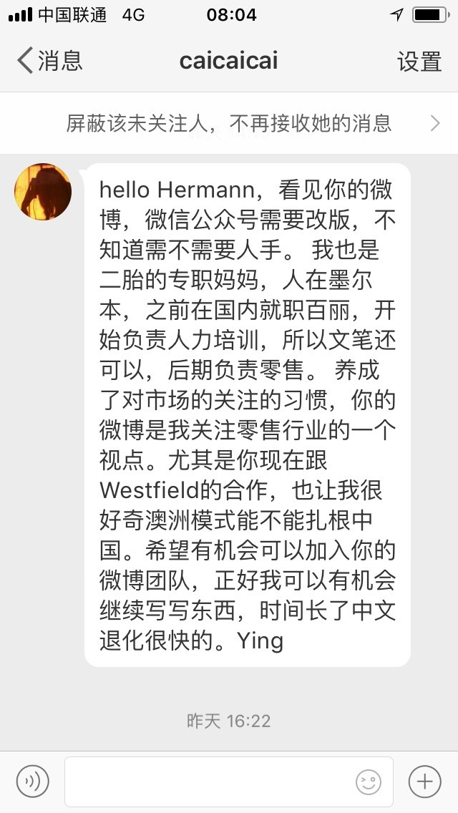

这句回复有些鸡贼“欢迎你加入我们的行业编辑团队尝试一下做一下义工的滋味”， 申请人或许是想兼职或全职，这一句直接让别人免费贡献劳动力了。
@Hermann中国零售微博:
#Hermann博友互动# 【澳洲墨尔本的二胎专职妈妈热情伸出援手】@caicaicai ：“hello Hermann，看见你的微博，微信公众号需要改版，不知道需不需要人手。 我也是二胎的专职妈妈，人在墨尔本，之前在国内就职百丽，开始负责人力培训，所以文笔还可以，后期负责零售。 养成了对市场的关注的习惯，你的微博是我关注零售行业的一个视点。尤其是你现在跟Westfield的合作，也让我很好奇澳洲模式能不能扎根中国。希望有机会可以加入你的微博团队，正好我可以有机会继续写写东西，时间长了中文退化很快的。Ying”
Hermann:
你好Ying，感谢你在我们最艰难的时候伸出援手！我们从2010-8-15坚持到今天，这么多年来，可以说是中国零售、商业地产界最大、最坚持、一天都没有懈怠的义工之一！欢迎你加入我们的行业编辑团队尝试一下做一下义工的滋味，哈哈！Shelley会联系你的。
其他零售、商业地产行业，或者对这两个行业感兴趣的大学生朋友们也赶快来帮忙吧！私信联系。我会亲自回！谢谢大家！
墨尔本是个好地方，甚是想念，唐人街中国美食、点心、日料很精彩，墨尔本大学的美丽校园，附近小意大利区的精彩美食与不夜城，美轮美奂的“维妈市场”(维多利亚女皇菜市场)及美食广场......
澳洲购物中心是全球最成功的，没有之一！其背后的理念、逻辑非常科学、严谨，在全球任何一个角落都能落地生根，茁壮成长，历久不衰。中国已经有大连和平广场、广州珠江道等项目按照澳洲逻辑取得了巨大的成功或获得重生的机会。我们相信在中国未来有海量的机会……
祝你的两个宝宝快高长大！
真诚的，
Hermann 杭州·城站火车站
杭州·城站火车站
Hermann:
你好Ying，感谢你在我们最艰难的时候伸出援手！我们从2010-8-15坚持到今天，这么多年来，可以说是中国零售、商业地产界最大、最坚持、一天都没有懈怠的义工之一！欢迎你加入我们的行业编辑团队尝试一下做一下义工的滋味，哈哈！Shelley会联系你的。
其他零售、商业地产行业，或者对这两个行业感兴趣的大学生朋友们也赶快来帮忙吧！私信联系。我会亲自回！谢谢大家！
墨尔本是个好地方，甚是想念，唐人街中国美食、点心、日料很精彩，墨尔本大学的美丽校园，附近小意大利区的精彩美食与不夜城，美轮美奂的“维妈市场”(维多利亚女皇菜市场)及美食广场......
澳洲购物中心是全球最成功的，没有之一！其背后的理念、逻辑非常科学、严谨，在全球任何一个角落都能落地生根，茁壮成长，历久不衰。中国已经有大连和平广场、广州珠江道等项目按照澳洲逻辑取得了巨大的成功或获得重生的机会。我们相信在中国未来有海量的机会……
祝你的两个宝宝快高长大！
真诚的，
Hermann
- 